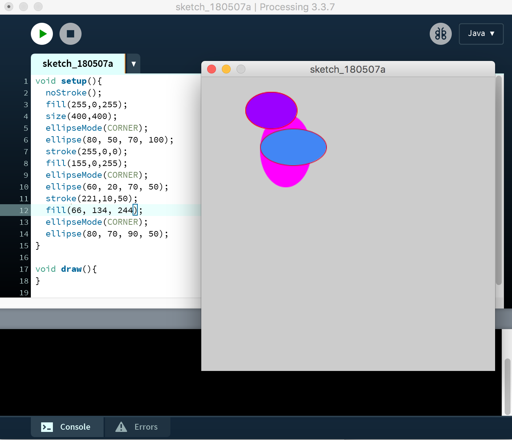
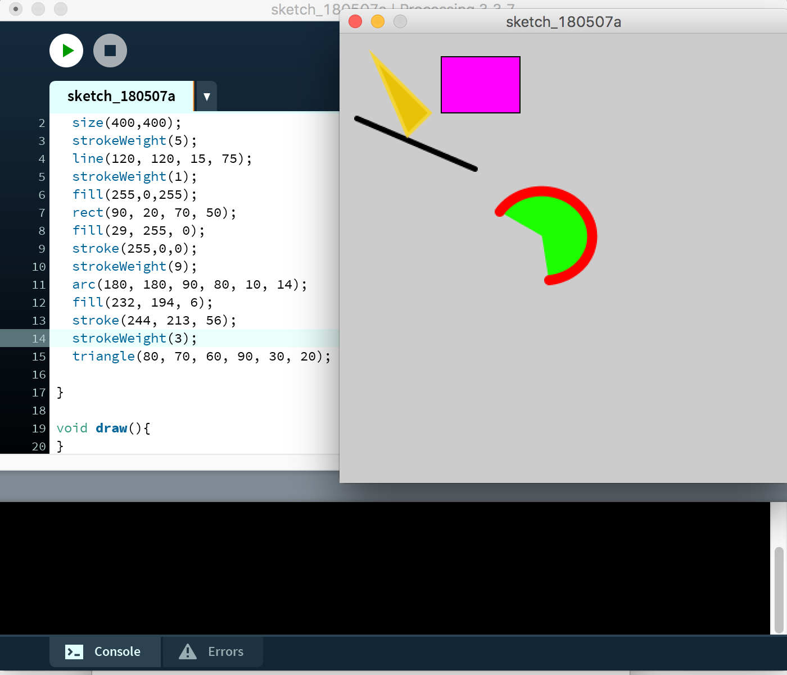
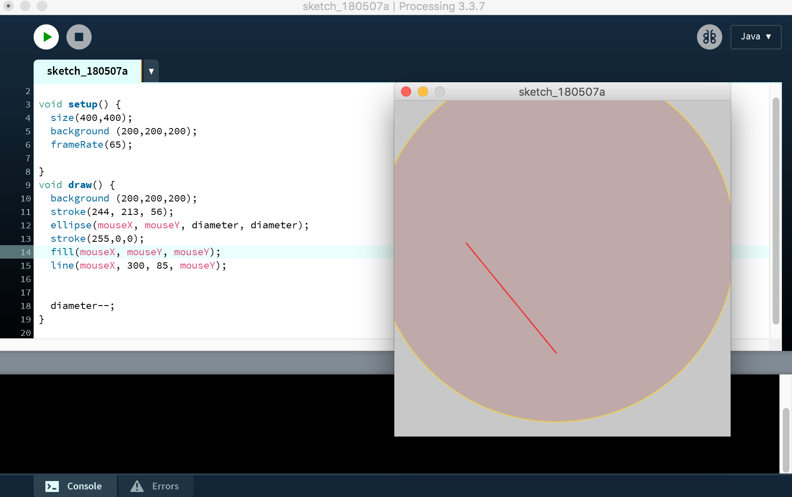
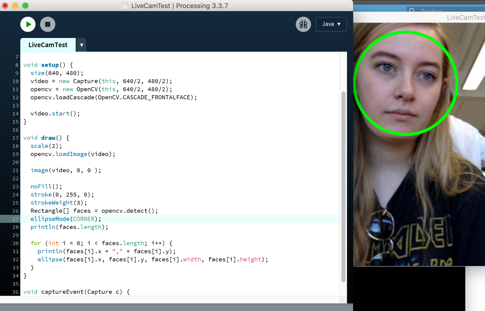
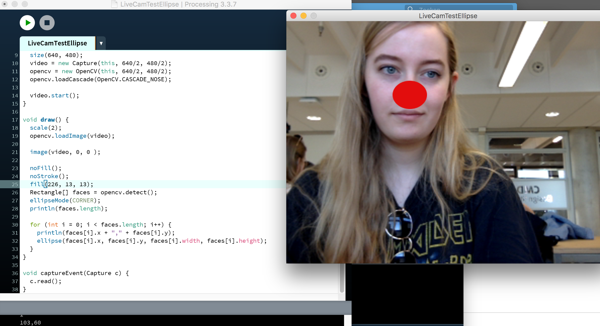
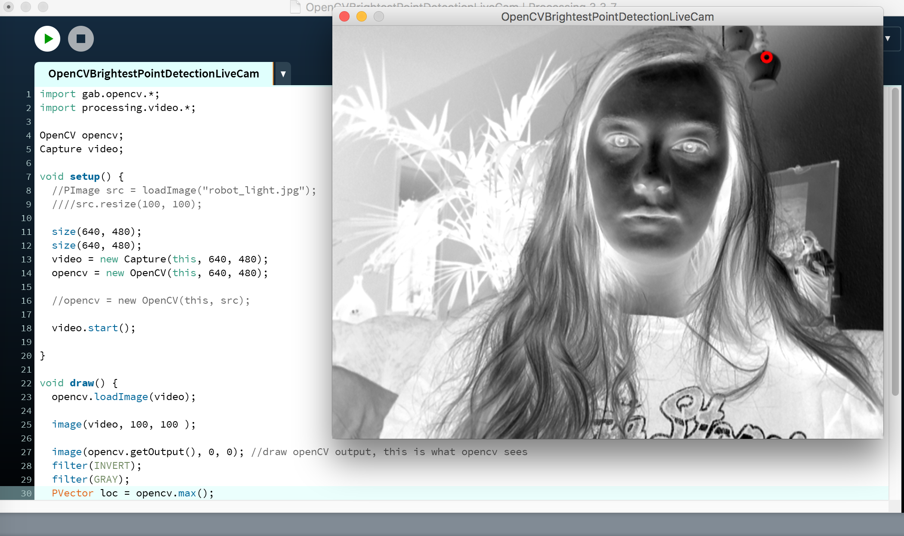

Assignments
Assignment X
Write a program that draws three (or more) ellipses: • at various locations, • with various colors • various widths and heights • with and without borders (of various colors)
Assignment X
Write a program that draws: • at least four different shapes (not circles), • in various colors, • at various locations.
Assignment X
Write a program that draws at least two different shapes, with various colors and make them interactive. Ideas: • Draw a line where one of the ends follows the mouse. • Draw a circle where the color is related to the location of the mouse. • Draw a rectangle with the size related to the x location of the mouse. • Etc.
Assignment CV1
Now it's time to start experimenting. Take a good look at the LiveCamTest code you just opened. Can you discover which line causes a rectangle to be drawn around a recognized face? (Tip: rect = rectangle). Adjust the code so that a circle is drawn instead of a rectangle.
Assignment CV2
Adjust the code so that every recognised face gets an 'anonymous' black bar in front of his eyes or a red clown nose instead of his/her nose.
Assignment CV3
Adjust the code of one of the examples so that something cool happens.
